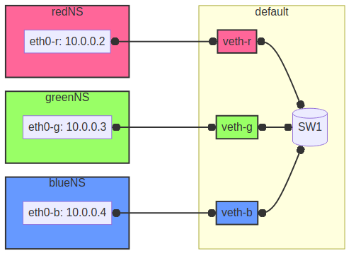

Virtual network with Openswitch
Virtual network with Openswitch
In this project, I want to show, how to designed and implemented a virtual network using Openvswitch and network namespaces under linux. By leveraging virtual Ethernet tunnels and a central virtual switch, we createa flexible and scalable network environment. This project aims to demonstrate the capabilities of virtual networking technologies and provide a practical example for educational purposes.
The following diagram illustrates a virtual network setup using Openswitch. The vSwitch serves as the central point, connecting three distinct network namespaces represented by red, green, and blue. Each namespace is allocated an IP address (eth0-r, eth0-g, eth0-b) within the 10.0.0.0/24 subnet and is connected to the vSwitch via virtual Ethernet interfaces (veth-r, veth-g, veth-b).

Figure 1: Network Diagram
Create functions for each name space
To begin with we define functions for each network namespace: green, red, orange (as a spare for future projects), and blue. These functions allow executing commands within the respective namespaces using the ip netns exec command. Each function changes the color output of the executed commands for better visual identification.
function green () { if [[ $1 = "bash" ]] then echo "To risky for my taste" else echo -ne '\e[32m' ip netns exec green $@ echo -ne '\e[0m' fi }
function red () { if [[ $1 = "bash" ]] then echo "To risky for my taste" else echo -ne '\e[31m' ip netns exec red $@ echo -ne '\e[0m' fi }
function orange () { if [[ $1 = "bash" ]] then echo "To risky for my taste" else echo -ne '\e[33m' ip netns exec orange $@ echo -ne '\e[0m' fi }
function blue () { if [[ $1 = "bash" ]] then echo "To risky for my taste" else echo -ne '\e[34m' ip netns exec blue $@ echo -ne '\e[0m' fi }
Create namespaces
The next step is initializing the three network namespaces named red, green, and blue using the ip netns add command. Subsequently, the loopback interface within each namespace is brought up using the ip l dev lo up command to enable local communication within the namespace. Finally, the current state of network interfaces within each namespace is displayed using the ip l command.
ip netns add red ip netns add green ip netns add blue
red ip l dev lo up green ip l dev lo up blue ip l dev lo up
red ip l green ip l blue ip l
Create tunnels
Now we create virtual Ethernet tunnels (veth) named veth-r, veth-g, and veth-b, each paired with an interface in its respective network namespace (eth0-r, eth0-g, eth0-b) for communication. These tunnels facilitate communication between the vSwitch and the network namespaces.
ip link add veth-r type veth peer eth0-r ip link add veth-g type veth peer eth0-g ip link add veth-b type veth peer eth0-b
Place link in namespaces
After creating the tunnels, the next step is to assign the interfaces to their respective namespaces. This is achieved by associating each tunnel's endpoint (eth0-r, eth0-g, eth0-b) with its corresponding namespace (red, green, blue).
ip link set eth0-r netns red ip link set eth0-g netns green ip link set eth0-b netns blue
Add IPv4-Addresses
Finally, IPv4 addresses are assigned to the interfaces within each namespace to enable network communication. The IP addresses 10.0.0.2, 10.0.0.3, and 10.0.0.4 with a /24 subnet mask are allocated to eth0-r, eth0-g, and eth0-b interfaces, respectively. Additionally, the interfaces are brought up to activate the network configuration.
red ip address add 10.0.0.2/24 dev eth0-r red ip link set dev eth0-r up green ip address add 10.0.0.3/24 dev eth0-g green ip link set dev eth0-g up blue ip address add 10.0.0.4/24 dev eth0-b blue ip link set dev eth0-b up
Open virtual switch
To set up the virtual switch, first, the Openvswitch package is installed using the appropriate package manager, followed by starting the ovs-vswitchd service to manage the switch.
Install
if [ -f /etc/os-release ]; then . /etc/os-release else echo "Cannot determine the Linux distribution." exit 1 fi case $ID_LIKE in debian|ubuntu) apt install -y openvswitch-switch ;; fedora|rhel|centos) yum install -y openvswitch ;; suse) zypper install -y openvswitch ;; arch) pacman -Syu openvswitch ;; *) echo "Unsupported distribution." exit 1 ;; esac
systemctl start ovs-vswitchd.service
Add Switch
After installation, a virtual switch named SW1 is created using the ovs-vsctl add-br command. The switch configuration is displayed using ovs-vsctl show.
ovs-vsctl add-br SW1 ovs-vsctl show
Add ports
Next, ports are added to the virtual switch to connect it with the network namespaces. Each port is associated with a corresponding tunnel interface (veth-r, veth-g, veth-b).
ovs-vsctl add-port SW1 veth-r ovs-vsctl add-port SW1 veth-b ovs-vsctl add-port SW1 veth-g ovs-vsctl show
These ports must now be activated.
ip link set veth-r up ip link set veth-g up ip link set veth-b up ip a | grep veth -A3
Conclusion
In conclusion, our virtual network setup showcases the versatility and efficiency of software-defined networking (SDN) solutions. By abstracting network functionality into virtualized components, we enable easier management, increased flexibility, and better resource utilization. This project serves as a foundation for further exploration and experimentation in the realm of virtualized networking environments.
You can now go and explore the different name spaces, by calling network related command with the red(), blue() and green() functions like:
blue ip route red ping 10.0.0.3 -c 5 green nstat -s | grep -i icmp